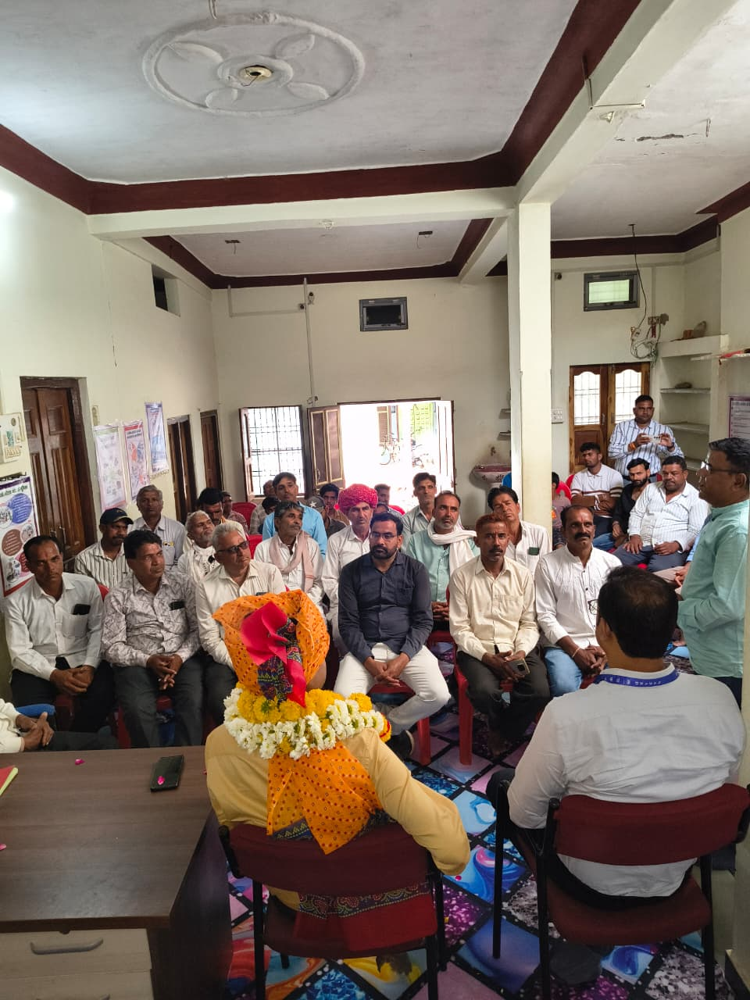

चेतक फार्मर्स प्रोड्यूसर्स ऑर्गनाइजेशन को-ऑपरेटिव सोसाइटी लि. सिद्धपुरा
ग्राम सिद्धपुरा, जिला प्रतापगढ़ (राज.)
📞 7727966057
✉️ chetakfposidhpura@gmail.com
✉️ chetakfposidhpura@gmail.com
ग्राम सिद्धपुरा, जिला प्रतापगढ़ (राज.)
▶️ नाबार्ड के सहयोग से सिद्धपुरा में ‘चेतक किसान उत्पादक संगठन’ (FPO) का गठन, कलेक्टर डॉ. अंजलि राजोरिया ने स्वीकृति पत्र सौंपा।
▶️ मुख्य फोकस: दुग्ध उत्पादन बढ़ाना, वैज्ञानिक पशुपालन और बेहतर मार्केटिंग व्यवस्था।
▶️ किसानों को लाभ:
▶️ उद्देश्य: किसानों को संगठित कर आय बढ़ाना और उन्हें उद्यमी बनाना।

चेतक फार्मर प्रोडूसर आर्गेनाइजेशन कोऑपरेटिव सोसाइटी लिमिटेड सिद्धपुरा किसानों का एक समर्पित संगठन है। हमारा उद्देश्य किसानों को सशक्त बनाना और उनकी आय में वृद्धि करना है।
🟢 नाबार्ड (NABARD): National Bank for Agriculture and Rural Development, Jaipur (Raj.)
🟢 POPI: Arunodaya Sarveshwari Lok Kalyan Samiti, Ujjain (M.P.)



चेतक फार्मर प्रोडूसर आर्गेनाइजेशन कोऑपरेटिव सोसाइटी लिमिटेड सिद्धपुरा
बावड़ी के पास, वार्ड नं. 2, पाटीदार मोहल्ला
ग्राम सिद्धपुरा, जिला प्रतापगढ़
राजस्थान – 312616
📞 7727966057
✉️ chetakfposidhpura@gmail.com